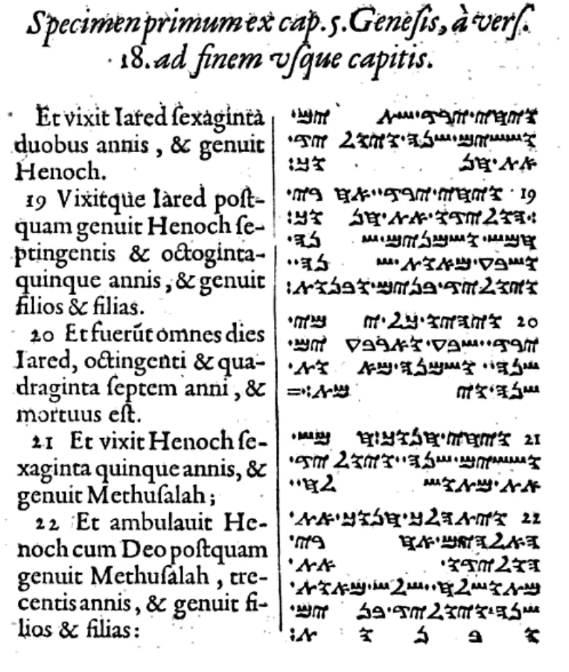
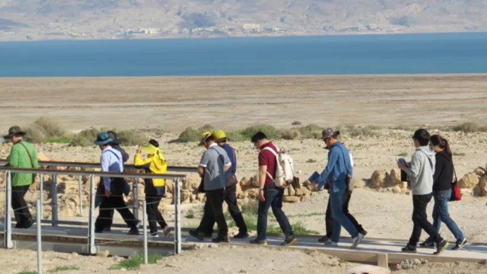

No good counter-argument has been published by LDS scholars.
He made his own version of the whole Bible. In it, Genesis 50 gains about fourteen new verses.
In them the dying Joseph of Egypt foretells a "choice seer" who will be named Joseph. That seer's father will be called Joseph too.
Joseph Smith Jr. His father was Joseph Smith Sr.
Nothing like it. Not the Hebrew.
Not the Dead Sea Scrolls. Not the Greek.
Not the Samaritan text. No ancient copy of Genesis has these verses.
Robert Matthews and Kent Jackson agree no old copy has it. They argue the revision was never meant to restore lost words only.
It could be new revelation, or added comment.
Strong for you. That answer is honest, and it gives the point away.
A prophecy naming the translator was put into Genesis by the translator.
"Which ancient manuscript has those verses in Genesis 50?"


The added verses need not be lost text; they can be given by God.
Latter-day Saint scholars grant that no ancient copy has the passage. Robert Matthews and Kent Jackson say so, and FAIR follows them.
Their argument is that the revision was never meant only to restore lost words. It can be restored content. It can be inspired comment. It can be a bringing together of texts, or a prophetic expansion shaped for a latter-day audience.
On that view, JST Genesis 50 may restore a real prophecy kept on the brass plates. That is why it also stands at 2 Nephi 3. It would have dropped out of the Hebrew line very early. Or it may be new content that was never in the Bible at all. Either way it rests on revelation, not on old copies.
Strong for you: the answer is honest, and it gives the point away.
The textual fact is conceded on all sides. No ancient witness contains the passage. Not the Hebrew, not the Septuagint, not a Dead Sea Scroll, not the Samaritan Pentateuch, not a targum. And the prophecy names the man who produced it.
The reply does not rebut the evidence. It reclassifies the revision so that missing manuscript support cannot count against it. That is untestable rather than a refutation.